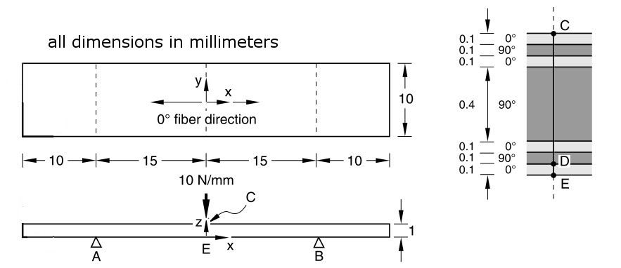
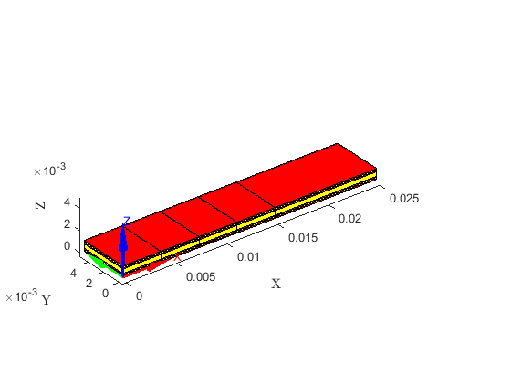
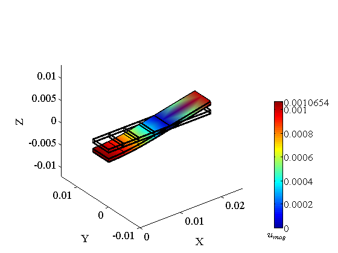
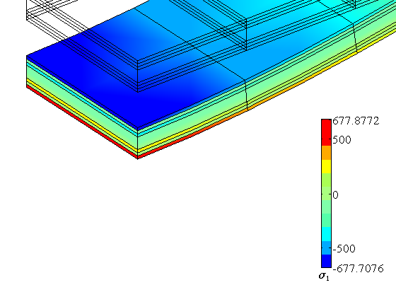
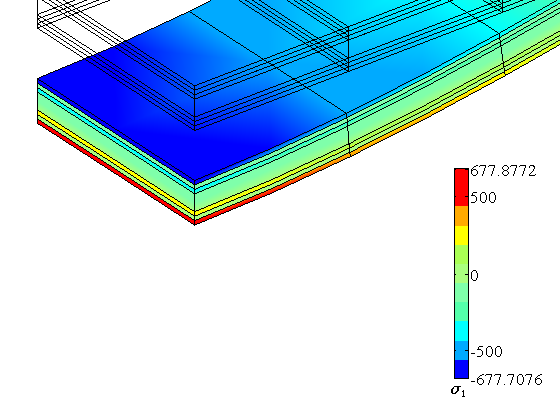
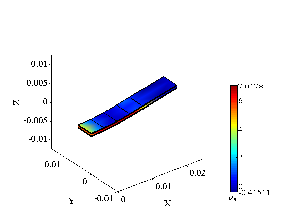
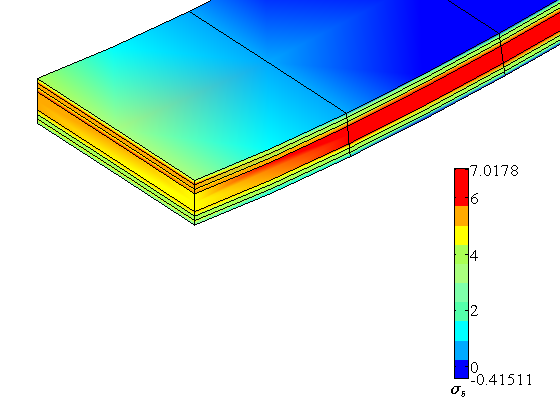

Laminated Strip Under Three-Point Bending
Contents
Link to the m-file.
Description
Determine the central transverse displacement in a simply-supported seven layer symmetric strip with a central line load. A 0/90/0/90/0/90/0 material lay-up is specified with the center ply being four times as thick as the others.
Reference: NAFEMS Report R0031, Test No.1, 17-Dec-1998.
The plate is discretized with solid serendipity quadratic hexahedral elements. Because of the symmetries of the geometry and load, only the first-quadrant (in XY) quarter of the plate is modeled.
The coordinate system is centered at point E (at the difference with respect to the original benchmark definition). The load is applied along a curve passing through point C. The simple support is applied along the curve passing through point B.
|  |
| Figure 1. Definition of the geometry of the thick elliptical plate |
We realize the simple supports along the lines A, B and the line load at point C are illegal from the point of view of convergence. No convergence can be hoped for as the stress underneath the load and above the simple supports is infinite in the limit (these locations are stress singularities). However, for relatively coarse meshes the results away from the singularities are still meaningful.
The target quantities are displacement at the bottom surface at point E, the tensile axial stress at the same point, and of the transverse shear stress at point D in between the bottommost two layers (See figure 1).
Solution
function pub_R0031NAFEMS
u= physical_units_struct;
The material is orthotropic, the same in all seven layers (the orientation of the material is different ddepending on the layer, of course).
E1=100e3*u.MEGA*u.PA; E2=5e3*u.MEGA*u.PA; E3=E2;
G12=3e3*u.MEGA*u.PA; G13=2e3*u.MEGA*u.PA; G23=2e3*u.MEGA*u.PA;
nu12= 0.4; nu13= 0.02; nu23= 0.3;
The geometry of the strip.
AB=30*u.MM; % span between simple supports OH=10*u.MM;% overhang W=10*u.MM;% width of the plate
The line load is in the negative Z direction.
q0 = -10*u.NT/u.MM;% find load
Here we define the layout and the thicknesses of the layers.
angles =[0,90,0,90,0,90,0];
ts= [0.1, 0.1, 0.1, 0.4, 0.1, 0.1, 0.1]'*u.MM;% layer thicknesses
TH=sum(ts);% total thickness of the plate
Reference deflection under the load is
wEref=-1.06*u.MM;
The reference tensile stress at the bottom of the lowest layer is
sigma11Eref=684*u.MEGA*u.PA;
Because we model the first-quadrant quarter of the plate using coordinate axes centered at the point E the shear at the point D is positive instead of negative as in the benchmark where the coordinate system is located at the outer corner of the strip.
sigma13Dref=4.1*u.MEGA*u.PA;
The mesh is created using the composite-plate utility, making sure the nodes are placed at the location of the simple support by using the version H8_composite_plate_x.
We select 8 elements spanwise and 2 elements widthwise. The overhang of the plate is given one element.
nL=4; nO=1; nW=1;
Each layer is modeled with a single element.
nts= 1*ones(length(angles),1);% number of elements per layer
Define the geometrical tolerance using the minimal dimension in the model.
tolerance =min(ts)/max(nts)/100;
The nodes must be located so that the simple support can be applied to an entire row of nodes.
xs=unique([linspace(0,AB/2,nL+1),linspace(AB/2,AB/2+OH,nO+1)]);
ys=linspace(0,W/2,nW+1);
[fens,fes] = H8_composite_plate_x(xs,ys,ts,nts);;
[fens,fes] = H8_to_H20(fens,fes);
We will create two regions, one for the layers with 0° orientation, and one for the layers with 90° orientation.
region1list=[fe_select(fens,fes,struct('label', 1)), fe_select(fens,fes,struct('label', 3)), fe_select(fens,fes,struct('label', 5)), fe_select(fens,fes,struct('label', 7))]; region2list=[fe_select(fens,fes,struct('label', 2)), fe_select(fens,fes,struct('label', 4)), fe_select(fens,fes,struct('label', 6))];
The two regions are now rendered graphically. Note the axes at point E. Region 1 finite elements are shown in red, region 2 finite elements are displayed in yellow.
gv=drawmesh( {fens,subset(fes,region1list)...
},'fes', 'facecolor','r');
gv=drawmesh( {fens,subset(fes,region2list)...
},'gv',gv,'fes', 'facecolor','y');
draw_axes(gv,struct('length',5*TH));
labels
 The model data is now packaged up for the solver.
clear model_data
model_data.fens =fens;
Region 1 is defined for the 0° layers. Full 3 x 3 x 3 Gauss quadrature is used because of the line load and the line support. With reduced quadrature unphysical deformation modes may appear.
clear region region.property = 'orthotropic'; region.E1 =E1; region.E2 =E2; region.E3 =E3; region.G12=G12; region.G13=G13; region.G23=G23; region.nu12=nu12; region.nu13=nu13; region.nu23=nu23; region.fes= subset(fes,region1list); region.integration_rule = gauss_rule (struct('dim', 3, 'order', 3)); region.Rm =rotmat(angles(1)/180*pi* [0,0,1]); model_data.region{1} =region;
Region 2 is defined for the 90° layers.
clear region region.property = 'orthotropic'; region.E1 =E1; region.E2 =E2; region.E3 =E3; region.G12=G12; region.G13=G13; region.G23=G23; region.nu12=nu12; region.nu13=nu13; region.nu23=nu23; region.fes= subset(fes,region2list); region.integration_rule = gauss_rule (struct('dim', 3, 'order', 3)); region.Rm =rotmat(angles(2)/180*pi* [0,0,1]); model_data.region{2} =region;
The essential boundary conditions are applied on the symmetry planes. First the plane X=0;...
clear essential essential.component= [1]; essential.fixed_value= 0; essential.node_list = fenode_select(fens, ... struct('box', [0,0,-Inf,Inf,-Inf,Inf], 'inflate',tolerance)); model_data.boundary_conditions.essential{1} = essential;
... and then the plane Y=0.
clear essential essential.component= [2]; essential.fixed_value= 0; essential.node_list = fenode_select(fens, ... struct('box', [-Inf,Inf,0,0,-Inf,Inf], 'inflate',tolerance)); model_data.boundary_conditions.essential{2} = essential;
The transverse displacement is fixed along the line passing through point B. The nodes are fixed in the box along this line in the Z direction.
clear essential essential.component= [3]; essential.fixed_value= 0; essential.node_list = fenode_select(fens, ... struct('box', [AB/2,AB/2,-Inf,Inf,0,0], 'inflate',tolerance)); model_data.boundary_conditions.essential{3} = essential;
The traction boundary condition is applied along the edge of the mesh passing through point C at the top surface of the strip. First we extract the boundary of the hexahedral mesh.
clear traction
bdry_fes = mesh_boundary(fes, []);
This boundary consists of quadrilaterals. From the collection of the boundary quadrilaterals we select those at the top surface.
bcl = fe_select(fens, bdry_fes, ... struct ('box',[0,0,-Inf,Inf,-Inf,Inf],'inflate',tolerance));
We extract the boundary of the quadrilaterals at the top surface of the strip. This boundary will consist of L3 line elements.
line_fes = mesh_boundary(subset(bdry_fes,bcl), struct('other_dimension',1));
From the line elements we will select only those that pass through point C. That is the straight line on which the traction is going to be applied.
lcl = fe_select(fens, line_fes, ... struct ('box',[0,0,-Inf,Inf,TH,TH],'inflate',tolerance)); traction.fes =subset(line_fes,lcl);
Note that we have to apply only half of the line load given that were modeling just one quarter of the geometry and were splitting the line load with the symmetry plane X=0. Also note that the quadrature rule is one-dimensional since we are integrating along a curve.
traction.traction= [0; 0; q0/2];
traction.integration_rule =gauss_rule (struct('dim', 1, 'order', 3));
model_data.boundary_conditions.traction{1} = traction;
The model is defined and we obtain the displacement solution:
model_data =deformation_linear_statics(model_data);
The results are now presented graphically. Scale for the deflections:
u_scale=2;
model_data.postprocessing.u_scale= u_scale;
model_data=deformation_plot_deformation(model_data);
 The results of the displacement and stresses will be reported at nodes located at the appropriate points.
nE=[fenode_select(fens, struct('box', [0,0,0,0,0,0],... 'inflate',tolerance))]; nC=[fenode_select(fens, struct('box', [0,0,0,0,TH,TH],... 'inflate',tolerance))]; nD=[fenode_select(fens, struct('box', [0,0,0,0,ts(1),ts(1)],... 'inflate',tolerance))];
The displacement is reported at the bottom surface:
wc=gather_values(model_data.u,nE);
disp(['Center deflection=' num2str(wc(3)/u.MM) ' mm, wc/wc_ref=' num2str(wc(3)/wEref*100) '%'])
Center deflection=-1.0568 mm, wc/wc_ref=99.698%
We are going to plot the stress using a nodal stress field. It is extracted from the quadrature points.
In order to see the details of the stress field around the output locations we provide camera settings. These settings may be obtained by using the graphic_viewer method camget as camget(model_data.gv).
detail_camera =[-0.1106 -0.1459 0.1040 0.0047 0.0043 -0.0054 0 0 1.0 1.7035];;
model_data.postprocessing.u_scale=u_scale;
model_data.postprocessing.colormap=cadcolors2;
model_data.postprocessing.stress_component=1;% sigma_X= sigma_11= sigma_1
The observer function will extract the stress values from the nodal stress field. Note that quantities at points which are shared by two regions need to be set separately for each region.
sigma11C=[]; sigma11D1=[]; sigma11D2=[]; sigma11E=[];
function observer11(iregion, stressf,model_data)
if (iregion==1),
sigma11C= gather_values(stressf,nC);
sigma11D1= gather_values(stressf,nD);
sigma11E= gather_values(stressf,nE);
else,
sigma11D2= gather_values(stressf,nD);
end
end
model_data.postprocessing.observer =@ observer11;
model_data.postprocessing.use_spr=true;
model_data.postprocessing.outputRm=eye(3);%output in the global coordinate system
model_data.postprocessing.stress_units=(u.MEGA*u.PA);% set the stress units
model_data=deformation_plot_stress(model_data);
snapnow; % capture the current image
camset(model_data.postprocessing.gv,detail_camera);% zoom in
snapnow; % capture the current image
model_data.postprocessing.gv=[];
 
 The axial stress is reported:
disp(['Point C sigma11=' num2str(sigma11C) ' MPa']) disp(['Point D, layer 1, sigma11=' num2str(sigma11D1) ' MPa']) disp(['Point D, layer 2, sigma11=' num2str(sigma11D2) ' MPa']) disp(['Point E sigma11=' num2str(sigma11E) ' MPa '... '(relative error ' num2str((sigma11E*(u.MEGA*u.PA)-sigma11Eref)/(sigma11Eref)*100) '%)']) disp([' to be compared with reference at E, sigma11=' num2str(sigma11Eref/((u.MEGA*u.PA))) ' MPa' ])
Point C sigma11=-673.2407 MPa
Point D, layer 1, sigma11=548.1924 MPa
Point D, layer 2, sigma11=25.8357 MPa
Point E sigma11=673.3373 MPa (relative error -1.5589%)
to be compared with reference at E, sigma11=684 MPa
The transverse shear is reported at all three points again, but the reference value is available only at point D. Note that the stress vector component is sigma_XZ= sigma_13= sigma_5
model_data.postprocessing.stress_component=5;;
Given that point D is shared by the two regions (by two layers of those regions), in general we need to report to values even though theoretically the stress should be continuous.
sigma13C=[]; sigma13D1=[]; sigma13D2=[]; sigma13E=[];
function observer13(iregion, stressf,model_data)
if (iregion==1),
sigma13C= gather_values(stressf,nC);
sigma13D1= gather_values(stressf,nD);
sigma13E= gather_values(stressf,nE);
else,
sigma13D2= gather_values(stressf,nD);
end
end
model_data.postprocessing.observer =@ observer13;
model_data.postprocessing.use_spr=true;
Note that we are specifying the identity matrix as the material orientation for the output of the stress. The identity matrix signifies the global Cartesian coordinate system EXYZ.
model_data.postprocessing.outputRm=eye(3);%output in the global coordinate system model_data.postprocessing.stress_units=(u.MEGA*u.PA);% set the stress units model_data=deformation_plot_stress(model_data); snapnow; % capture the current image camset(model_data.postprocessing.gv,detail_camera);% zoom in snapnow; % capture the current image 
The shear stress in the plane XZ (13) is reported next:
disp(['Point C sigma13=' num2str(sigma13C) ' MPa']) disp(['Point D, layer 1, sigma13=' num2str(sigma13D1) ' MPa '... '(relative error ' num2str((sigma13D1*(u.MEGA*u.PA)-sigma13Dref)/(sigma13Dref)*100) '%)']) disp(['Point D, layer 2, sigma13=' num2str(sigma13D2) ' MPa '... '(relative error ' num2str((sigma13D2*(u.MEGA*u.PA)-sigma13Dref)/(sigma13Dref)*100) '%)']) disp([' to be compared with reference at D, sigma13=' num2str(sigma13Dref/(u.MEGA*u.PA)) ' MPa']) disp(['Point E sigma13=' num2str(sigma13E) ' MPa'])
Point C sigma13=3.9963 MPa
Point D, layer 1, sigma13=5.321 MPa (relative error 29.7811%)
Point D, layer 2, sigma13=4.4415 MPa (relative error 8.3292%)
to be compared with reference at D, sigma13=4.1 MPa
Point E sigma13=2.6496 MPa
Discussion
The present model delivers results with accuracy comparable to those reported for equivalent finite element models for Abaqus 6.11.
One has to be careful and not try to get the model to converge by increasing the number of elements. The simple-support boundary condition along a line (curve) and the load on the top face along a line are both strictly-speaking illegal for the continuum-element model. The coarse model can deliver reasonable results as long as we are not looking directly at the singularity, but it cannot go beyond that.
end